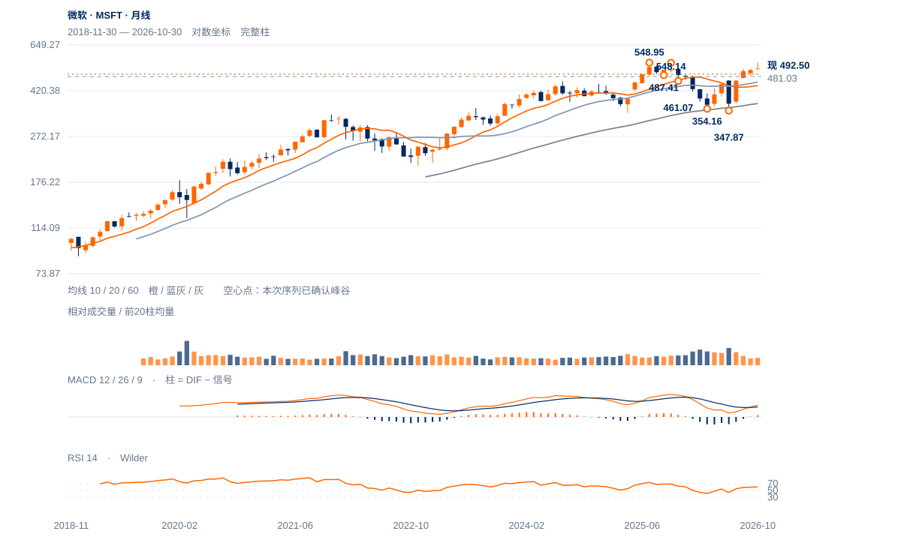

近期偏504.96以下弱反抽，2—6周以多年高区下方的区间重建为主。
微软 · 2026-11-20完整收盘
484.52失守504.96后是否进入更深区间回撤？
484.52-2.58%
大高区反弹失效
分期限展望
未来2—6周504.96先回收，再看531.22—537.22供应。19日原防线失效后继续跌破9月旧低区，短反弹先按多年高区回撤中的修复。
未来1—3个月重点检验460.55长期均衡附近与更大宽区间关系。原559.15高区上试后的回撤尚缺较高周谷；若不能重返537.22并保持，不能沿用高位突破候选。

长期背景
2025高555及2026高559仍构成多年供应，349附近大低后强反弹尚未站稳大高。长期更接近宽区间上部回撤而非已确认新升段。完整10月均衡和历史水平只提供背景，当前价格需要由后续确认检验。 当前日收盘484.52与已完成月线背景分开判断；11月仍未结束，不提前计为完整月级反转。
中期结构与新证据
完整周线已更新至11月20日：2026-08-28高516.78（2026-09-11确认）；2026-10-13高550.09（2026-10-30确认）；2026-11-04高558.07（2026-11-20确认）。最新一周与上次11月13日背景分别保存；23日仅为本周进行中观察。19日498.30已失504.96，20日484.52进一步低于9月486低区，17—18日盘中破谷收回没有持续。559.15多年高区上试之后，再破反弹低谷支持本段反弹失效，460.55长期均衡尚在下方。
确认与失效
504.96先恢复，再看531.22与537.22原两日。
旧504.96失效19日发生；460.55只是背景，不宣称必然到达。
主要反方
接近更下层均衡时存在承接，若迅速回504.96并越531，损伤可以逐步修复。
波动与量能
RSI14 35.04；ATR14 16.38；相对量1.66倍